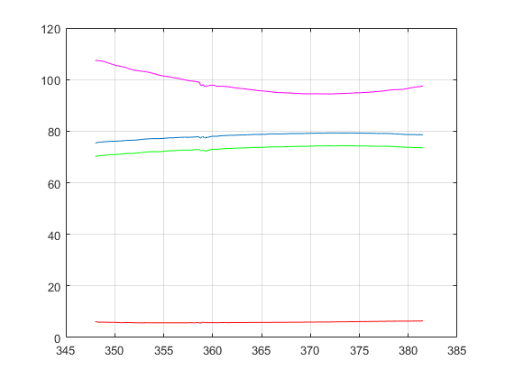

close all;
clear;
format short;
alpha = 2.7;
dc = 150/1e3;
dRc =100/1e3;
Ac = pi*dc^2/4;
Aac = Ac - pi*dRc^2/4;
load data_til_jib_CBV.mat;
i = 1;
time0 = data{1}.Values.Data;
i = i + 1;
pP0 = data{i}.Values.Data;
i = i + 1;
pA0 = data{i}.Values.Data;
i = i + 1;
pB0 = data{i}.Values.Data;
i = i + 1;
xCyl0 = data{i}.Values.Data;
i = i + 1;
pBc0 = data{i}.Values.Data;
i = i + 1;
pAc0 = data{i}.Values.Data;
i = i + 1;
vCyl0 = data{i}.Values.Data;
[n dummi] = size(time0);
idStart = 0;
idEnd = 0;
for i=2:n
if (time0(i)-time0(i-1)>0.005) & (idStart == 0)
iStart = i-1;
idStart = 1;
end
if (time0(i)<time0(i-1)) & (idEnd == 0)
iEnd = i-1;
idEnd = 1;
end
end
for i=iStart:iEnd
j = i + 1 - iStart;
time(j,1) = time0(i);
pP(j,1) = pP0(i);
pA(j,1) = pA0(i);
pB(j,1) = pB0(i);
xCyl(j,1) = xCyl0(i);
pBc(j,1) = pBc0(i);
pAc(j,1) = pAc0(i);
vCyl(j,1) = vCyl0(i);
end
[n1 dummi] = size(time);
tStart = 64;
tEnd = 201;
j = 0;
for i=1:n1
if time(i)>tStart & time(i)<tEnd
j = j + 1;
time_ES(j,1) = time(i);
pP_ES(j,1) = pP(i);
pA_ES(j,1) = pA(i);
pB_ES(j,1) = pB(i);
xCyl_ES(j,1) = xCyl(i);
pBc_ES(j,1) = pBc(i);
pAc_ES(j,1) = pAc(i);
vCyl_ES(j,1) = vCyl(i);
end
end
[nES dummi] = size(time_ES);
figure;
plot(time_ES,pA_ES);
hold on;
plot(time_ES,pB_ES,'r');
plot(time_ES,pAc_ES,'g');
plot(time_ES,pBc_ES,'m');
grid;
tStart = 225;
tEnd = 327;
j = 0;
for i=1:n1
if time(i)>tStart & time(i)<tEnd
j = j + 1;
time_RS(j,1) = time(i);
pP_RS(j,1) = pP(i);
pA_RS(j,1) = pA(i);
pB_RS(j,1) = pB(i);
xCyl_RS(j,1) = xCyl(i);
pBc_RS(j,1) = pBc(i);
pAc_RS(j,1) = pAc(i);
vCyl_RS(j,1) = vCyl(i);
end
end
[nRS dummi] = size(time_RS);
figure;
plot(time_RS,pA_RS);
hold on;
plot(time_RS,pB_RS,'r');
plot(time_RS,pAc_RS,'g');
plot(time_RS,pBc_RS,'m');
grid;
tStart = 348;
tEnd = 381.5;
j = 0;
for i=1:n1
if time(i)>tStart & time(i)<tEnd
j = j + 1;
time_EF(j,1) = time(i);
pP_EF(j,1) = pP(i);
pA_EF(j,1) = pA(i);
pB_EF(j,1) = pB(i);
xCyl_EF(j,1) = xCyl(i);
pBc_EF(j,1) = pBc(i);
pAc_EF(j,1) = pAc(i);
vCyl_EF(j,1) = vCyl(i);
end
end
[nEF dummi] = size(time_EF);
figure;
plot(time_EF,pA_EF);
hold on;
plot(time_EF,pB_EF,'r');
plot(time_EF,pAc_EF,'g');
plot(time_EF,pBc_EF,'m');
grid;
tStart = 411.5;
tEnd = 445.5;
j = 0;
for i=1:n1
if time(i)>tStart & time(i)<tEnd
j = j + 1;
time_RF(j,1) = time(i);
pP_RF(j,1) = pP(i);
pA_RF(j,1) = pA(i);
pB_RF(j,1) = pB(i);
xCyl_RF(j,1) = xCyl(i);
pBc_RF(j,1) = pBc(i);
pAc_RF(j,1) = pAc(i);
vCyl_RF(j,1) = vCyl(i);
end
end
[nRF dummi] = size(time_RF);
figure;
plot(time_RF,pA_RF);
hold on;
plot(time_RF,pB_RF,'r');
plot(time_RF,pAc_RF,'g');
plot(time_RF,pBc_RF,'m');
grid;
pOP_ES = alpha*pA_ES + pBc_ES - (alpha + 1)*pB_ES;
pOP_EF = alpha*pA_EF + pBc_EF - (alpha + 1)*pB_EF;
figure;
plot(xCyl_ES,pOP_ES);
hold on;
plot(xCyl_EF,pOP_EF,'r');
grid;
vc_ES = (xCyl_ES(nES) - xCyl_ES(1))/(time_ES(nES) - time_ES(1));
QCBV_ES = vc_ES*Aac*6e4;
vc_EF = (xCyl_EF(nEF) - xCyl_EF(1))/(time_EF(nEF) - time_EF(1));
QCBV_EF = vc_EF*Aac*6e4;
alpha = 2.7;
pOP_RS = alpha*pB_RS + pAc_RS - (alpha + 1)*pA_RS;
pOP_RF = alpha*pB_RF + pAc_RF - (alpha + 1)*pA_RF;
figure;
plot(xCyl_RS,pOP_RS);
hold on;
plot(xCyl_RF,pOP_RF,'r');
grid;
vc_RS = -(xCyl_RS(nRS) - xCyl_RS(1))/(time_RS(nRS) - time_RS(1));
QCBV_RS = vc_RS*Ac*6e4;
vc_RF = -(xCyl_RF(nRF) - xCyl_RF(1))/(time_RF(nRF) - time_RF(1));
QCBV_RF = vc_RF*Ac*6e4;
Fh_ES = (Ac*pAc_ES - Aac*pBc_ES)*1e5;
Fh_RS = (Ac*pAc_RS - Aac*pBc_RS)*1e5;
Fh_EF = (Ac*pAc_EF - Aac*pBc_EF)*1e5;
Fh_RF = (Ac*pAc_RF - Aac*pBc_RF)*1e5;
figure;
plot(xCyl_ES, Fh_ES);
hold on;
plot(xCyl_RS, Fh_RS, 'r');
plot(xCyl_EF, Fh_EF, 'g');
plot(xCyl_RF, Fh_RF, 'm');
grid;
fully_open_C1A_Q = [0 10 20 30 40 50];
fully_open_C1A_dP = [0 2 5 9 15 24];
fully_open_AC1_Q = [0 10 20 30 40 50];
fully_open_AC1_dP = [0 2 4.5 8 13 20];
Fast_run_AC1=[287 QCBV_EF];
Slow_run_AC1=[276 QCBV_ES];
Pcr_AC1 = [270 0];
Fast_run_C1A=[327 QCBV_RF];
Slow_run_C1A=[307 QCBV_RS];
Pcr_C1A = [290 0];
po = linspace(0,1000,(1000)*10);
m_R = (Fast_run_C1A(2)-Slow_run_C1A(2))/(Fast_run_C1A(1) -Slow_run_C1A(1));
c_R = Fast_run_C1A(2)-m_R*Fast_run_C1A(1);
plot_R = m_R*po+c_R;
m_E = (Fast_run_AC1(2)-Slow_run_AC1(2))/(Fast_run_AC1(1) -Slow_run_AC1(1));
c_E = Fast_run_AC1(2)-m_E*Fast_run_AC1(1);
plot_E = m_E*po+c_E;
Cd = 0.64;
roh = 850;
pcr_index = find(abs(plot_R-0.0)<0.02,1);
pcr_down = po(pcr_index)
K_down = (40/6e4)/sqrt(15e5);
Q_R = linspace(1,500);
P_R = (Q_R/K_down).^2;
pA_down = 11.1559e5;
pAc_down = 73.5184e5;
pB_down = 109.609e5;
dPopen_down = (K_down*(pAc_down+alpha*pB_down-pcr_down*1e5-(alpha+1)*pA_down)*sqrt(pAc_down-pA_down)/(QCBV_RF/6e4))/1e5
Ad_down = K_down/(Cd*sqrt(2/roh));
Ad_down_mm = Ad_down*1e6
pcr_index = find(abs(plot_E-0.0)<0.03,1);
pcr_up = po(pcr_index)
K_up = (50/6e4)/sqrt(20e5);
Q_E = linspace(1,500);
P_E = (Q_E/K_up).^2;
pA_up = 78.7477e5;
pBc_up = 95.6176e5;
pB_up = 5.81419e5;
dPopen_up = (K_up*(pBc_up+alpha*pA_up-pcr_up*1e5-(alpha+1)*pB_up)*sqrt(pBc_up-pB_up)/(QCBV_EF/6e4))/1e5
Ad_up = K_up/(Cd*sqrt(2/roh));
Ad_up_mm = Ad_up*1e6
figure()
plot(plot_E,po)
grid on
hold on
plot(plot_R,po)
line([Fast_run_C1A(2) Slow_run_C1A(2)],[Fast_run_C1A(1) Slow_run_C1A(1)])
xlim([0 200])
ylim([0 500])
pcr_down =
297.7298
dPopen_down =
150.5168
Ad_down_mm =
17.5339
pcr_up =
272.9273
dPopen_up =
156.3973
Ad_up_mm =
18.9810
